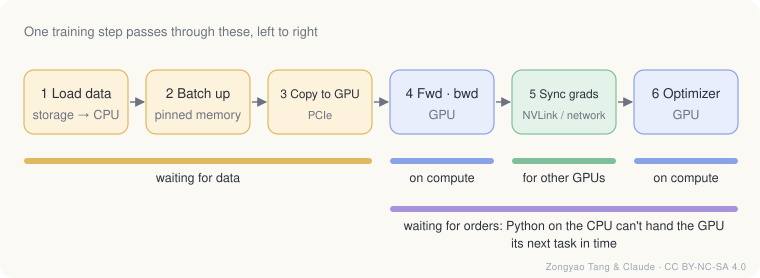
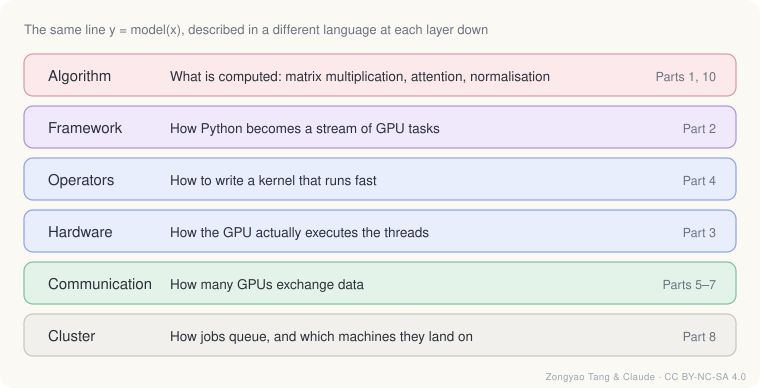
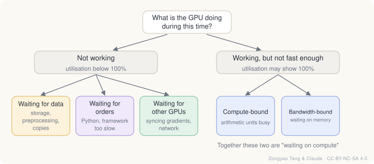

This unit gives no details yet; it draws one picture. The thread: one training step is a pipeline of stages in series → the same pipeline can be seen as six layers, and the course is ordered by those layers → "slow" on this pipeline comes in only four kinds → five ideas come back again and again across the layers. Read the rest of the course with this picture in hand, and everything you learn has a place and neighbours.
Part 0 · The big picture and measurement0.1 The journey of one training step
Translated by AI (Anthropic's Claude) from the Chinese edition. The Chinese original is the reference.
This unit answersWhat actually happens in one training step, from data on disk to updated parameters?
The map of the whole course. Every later part covers one stretch or one layer of this picture.
- One training step is a pipeline of stages in series; the slowest stage sets the speed
- The same pipeline seen as six layers; each layer down speaks a different language
- "Slow" on the pipeline comes in only four kinds: waiting for data, on compute, for orders, for the other GPUs
- Five ideas come back in every layer
Explanation
1One training step is a pipeline of stages in series; the slowest stage sets the speed
One training step passes, in order, through: reading data from storage → decoding and preprocessing on the CPU → assembling a batch in pinned memory → copying it to the GPU → the forward and backward computation → synchronising gradients across GPUs → the optimizer updating the parameters. The stages are joined end to end; if any one is slow, everything after it waits.

The six stages of a training step, and where each of the four kinds of waiting happens (the four are explained in card 3) Lay out in time what happens around
loss.backward(), and one training step goes like this:- Storage → CPU: read the raw data from disk or network storage, decode it (decompress images, tokenize text), apply data augmentation. This stretch runs on the CPU.
- CPU → pinned memory: put a number of samples together into a batch, in memory that is "pinned" (why it must be pinned: 0.3).
- Memory → GPU: copy the batch into GPU memory over PCIe.
- Forward and backward: the GPU runs hundreds or thousands of kernels and computes the loss and the gradients.
- Gradient synchronisation: when training on several GPUs, their gradients are combined over NVLink or the network (all-reduce).
- Optimizer: update the parameters with the gradients.
The key word is "series". Suppose that in step 4 the GPU could process 1000 samples a second, but in step 1 the CPU can only prepare 300. Then the whole runs at 300 samples a second, and the GPU sits idle 70% of the time. A faster GPU or better kernels would change nothing.
In practice it is a little better, because neighbouring stages can overlap: while the GPU computes on this batch, the CPU is already preparing the next; while the backward pass is still running, the gradients already computed can be sent off to be synchronised. Overlap makes the times of the stages "stack" instead of "add up", but it cannot change one fact: in the long run, the flow is set by the narrowest stage.
Each later part of the course explains one stretch of this in depth: part 2 covers steps 1–3 and how the framework drives step 4, parts 3 and 4 the inside of step 4, and parts 5, 6 and 7 step 5.
Troubleshooting: telling from the symptoms which stage is the bottleneck
Faced with "training is slow" or "GPU utilisation is low", ask in this order; each question halves the search:
First, is the GPU busy all the time? Look at a stretch of timeline (a profiler trace, or utilisation sampled every second):
- The GPU is busy, then idle, with regular gaps: the GPU is waiting for someone. Next, look at who is busy during the gaps.
- The GPU is busy all the time but throughput is low: the problem is the computation itself; go to the last question.
While the GPU is idle, what is the CPU doing?
- The data loading processes fill the CPU: the bottleneck is steps 1–2 (the data supply). To confirm, feed the same batch to the model again and again without reading any data; if throughput jumps, that is it.
- One core of the main process is full, running Python: the bottleneck is "giving orders" too slowly (overhead), common with small models made of many operators.
- The CPU is not busy either: it may be waiting for storage or network IO, or for other GPUs.
With several GPUs, does a single GPU run normally? Run the same configuration on one GPU. If the throughput per GPU is clearly higher, the loss is in step 5 (communication), or one GPU or one link is slowing everyone down.
The GPU is always busy but still slow. Only now is it worth going into kernels: find the two or three kernels that take the most time and decide whether they are limited by compute or by bandwidth (the roofline, part 3).
The reason for this order: the earlier checks are cheaper, and the earlier problems are the most common. Many "GPU performance problems" are really data loading problems.
An analogyLike an assembly line: if one of seven stations can pass only 10 pieces a minute, the whole line turns out 10 pieces a minute; the faster stations just wait longer.
So the first step of any optimisation is to find the slowest stage. Effort spent on a stage that is not the bottleneck does not change the overall speed at all.
Used later in The same pipeline seen as six layers; each layer down speaks a different language"Slow" on the pipeline comes in only four kinds: waiting for data, on compute, for orders, for the other GPUsSplit the time of one step: how much each stage takesProcesses, threads and the GIL: why data loading uses several processes- The pipeline is a view in time. The same thing can also be seen by layer: one line of loss.backward() is something completely different in each layer.
2The same pipeline seen as six layers; each layer down speaks a different language
Between a line of Python you write and the electrical signals in the hardware lie six layers: algorithm (the model and the training method), framework (how PyTorch executes it), operators (the individual kernels), hardware (how things run inside the GPU), communication (how GPUs exchange data), and cluster (how many machines are organised). Each layer describes the same event in its own terms.

The six layers and where they sit in this course Take the line
y = model(x)and see what it is in each layer:- Algorithm: the forward pass of a Transformer, mathematically a chain of matrix multiplications, attention and normalisation. The concern: "what is computed". (Parts 1 and 10)
- Framework: PyTorch executes operators one by one; each passes through the dispatcher to find its implementation, while the computation graph is recorded for the backward pass. The concern: "how Python turns into a stream of GPU tasks". (Part 2)
- Operators: each operator is one or a few CUDA kernels, such as one matrix multiplication or one softmax. The concern: "how to write this kernel so it is fast". (Part 4)
- Hardware: a kernel is split into hundreds of thousands of threads that run in groups of 32 on the GPU's compute units, with data flowing between GPU memory, caches and registers. The concern: "how the hardware actually runs it". (Part 3)
- Communication: with several GPUs, gradients travel between them over NVLink and InfiniBand, and NCCL arranges who sends what to whom. The concern: "how data flows between GPUs". (Parts 5, 6 and 7)
- Cluster: hundreds or thousands of GPUs are handed out by a scheduler; jobs queue, fail, and save checkpoints. The concern: "how these machines are organised". (Part 8)
Each layer is a translation of the one above: one action in a layer becomes many actions in the layer below. One line of Python becomes thousands of operator calls, one operator becomes hundreds of thousands of threads, one gradient synchronisation becomes tens of thousands of network packets.
This is also why performance problems are hard to track down: the symptom shows up in a top layer (training is slow) while the cause is often several layers below (a network link dropping packets, say). The course runs roughly from the top layer down, then from one machine to many, so that you can follow this chain of translations down, one layer at a time.
An analogyLike sending a parcel: you only say "to Shanghai" (algorithm); the courier turns that into sorting and routing instructions (framework); each step is a concrete loading or unloading (operator); trucks and conveyor belts actually move (hardware); cities are linked by trunk routes (communication); and someone has to run the whole network (cluster).
So when you see a symptom, first ask which layer it belongs to. The same "slow" may be a batch that is too small in the algorithm layer, a broken graph in the framework layer, uncoalesced memory access in the hardware layer. Find the right layer and the problem is half solved; it also tells you which repository and which directory to read when you go to the source code.
Used later in Five ideas come back in every layerA tensor = a piece of storage, plus a description of "how to read it"One operator call passes through five layers: bindings, dispatcher, autograd, backend implementation, CUDADeclarative: you describe the state you want, and controllers move reality towards it- The six layers answer "where". We also need a classification that answers "why slow". Whatever the layer, the reasons for slowness come down to just four.
3"Slow" on the pipeline comes in only four kinds: waiting for data, on compute, for orders, for the other GPUs
When the GPU does not produce at full speed, the reason is one of four: the data has not arrived yet (waiting for data); the GPU is computing but held back by its compute or its memory bandwidth (waiting on compute); the GPU is idle because the CPU hands out tasks too slowly (waiting for orders); it has finished its own share and waits for other GPUs or the network (waiting for the other GPUs).

First split by "working or not", then each into two Divide the GPU's time into "working" and "not working", then split each in two, and you get four kinds:
The GPU is not working
- Waiting for data: the next batch is not ready. The cause is in storage, CPU preprocessing, or the copy. The typical sign is GPU utilisation shaped like a saw blade. (The data supply, part 2)
- Waiting for orders: the data is there, but Python and the framework on the CPU cannot send the next kernel in time. Most visible when a model is made of very many small operators. (Eager overhead and torch.compile, part 2)
- Waiting for the other GPUs: in multi-GPU training every step synchronises gradients; the fast GPUs wait for the slow one, and all of them wait for the network. (Parts 5–7)
The GPU is working, but not fast enough
- Waiting on compute: in two forms. If the arithmetic units are truly fully loaded, it is compute-bound; if they are waiting for data to arrive from GPU memory, it is bandwidth-bound. The second is more common and better hidden, because GPU utilisation then shows 100%. (Parts 3 and 4)
In 3.1 you will meet "the three walls" (compute, bandwidth, overhead), a classification for the single-GPU computation alone. The four kinds of waiting here extend it to the whole pipeline, adding the data at the front of the pipeline and the communication between GPUs.
The biggest use of this classification is to keep you from taking the wrong medicine. Some common mismatches:
- The data cannot keep up, and you optimise the model's kernels.
- A small model is limited by how fast orders are given, and you buy a more expensive GPU.
- An operator is bandwidth-bound, and you expect more compute to make it faster.
- Communication is the bottleneck, and you keep adding GPUs.
An analogyLike a restaurant that is slow to serve: the ingredients have not arrived; the stove is not hot enough; the waiter is slow to pass on orders and the cooks stand idle; or a table's dishes wait for the slowest one so they can go out together.
So each optimisation works on only one of the kinds. Decide which kind first, then choose the cure; with the wrong kind, no amount of effort helps.
- The four kinds of waiting describe the problems. The cures look endlessly varied, but the thinking behind them is short.
4Five ideas come back in every layer
The techniques in the dozens of units that follow are versions of five ideas: the bottleneck decides everything; fill the waiting with other work; move data close and use it many times; batch things to spread fixed costs; trade a little more computation or communication for memory.
One: the bottleneck decides everything. The whole goes as fast as its slowest part, and optimising anything else does nothing (Amdahl's law). It appears: between the stages of the training pipeline; between a kernel's compute and its bandwidth (the roofline); among GPUs (the slowest GPU and the slowest link).
Two: fill the waiting with other work. Waiting cannot be avoided, but you can do something else meanwhile. It appears: when the GPU switches to another group of threads while one group waits for data; when the CPU prepares the next batch while the GPU computes; when DDP starts synchronising the gradients already computed before the backward pass has finished; when a matrix multiplication loads the next tile while it computes on this one.
Three: move data close and use it many times. The nearer the storage, the faster it is, so data that is used again and again is moved close. It appears: in the CPU's caches; on the GPU, when a tile of data is brought into shared memory and reused (tiling); in Flash Attention, which keeps intermediate results on chip instead of writing them back to GPU memory; in inference, when results already computed are cached (the KV cache).
Four: batch things to spread fixed costs. Everything you do has a fixed fee; do several things at once and the fee is shared. It appears: when samples are put into a batch; when hundreds of small kernels are fused into one; when small gradients are gathered into a bucket before being sent; when inference serves several requests in one computation.
Five: trade computation or communication for memory. When something does not fit, you can skip storing it and compute it again when needed, or fetch it from elsewhere. It appears: in Flash Attention, which recomputes attention in the backward pass; in activation checkpointing; in FSDP, where each GPU stores only part of the parameters and fetches the rest from other GPUs when they are needed.
Throughout the later units, wherever one of these five ideas appears, the "Builds on" links connect it back to here or to its previous appearance. When you finish, what you remember should not be dozens of separate tricks, but these five ideas worked out across the six layers.
An analogyLike learning a language: there are tens of thousands of words but only a few grammar rules. Once you recognise the rules, new words make sense at a glance.
So when you learn something new, first ask which of the ideas it is, in different clothes. Once it matches, it connects itself to what you already understand.
Builds on "Slow" on the pipeline comes in only four kinds: waiting for data, on compute, for orders, for the other GPUsThe same pipeline seen as six layers; each layer down speaks a different languageUsed later in Each speed-up fights a different bottleneckPyTorch caches GPU memory itself: reserved is what it got from the driver, allocated is what tensors actually useTo go backwards, the forward pass's intermediate results must be kept: the bulk of training memoryThis path costs several microseconds every time; when the model is small and its operators fragmented, it becomes the bottleneck
Putting it together
One training step is a pipeline: data flows from storage to the GPU, gradients are computed, synchronised across GPUs, and the parameters updated. The slowest stage sets the speed of the whole. From top to bottom the pipeline has six layers: algorithm, framework, operators, hardware, communication, cluster. Slow comes in only four kinds: waiting for data, waiting on compute, waiting for orders, waiting for the other GPUs. The cures come down to five ideas that keep coming back.
Test yourself
Without looking back at the explanation, say it in your own words.
- Which stages does one training step pass through, in order? Why does the slowest stage set the speed?
- Which six layers does the course divide the training system into? What does each one care about?
- When the GPU is not producing at full speed, which four things might it be "waiting" for? Give an example of each.
- What are the five ideas that keep coming back in the course? Give an example of each appearing in different layers.